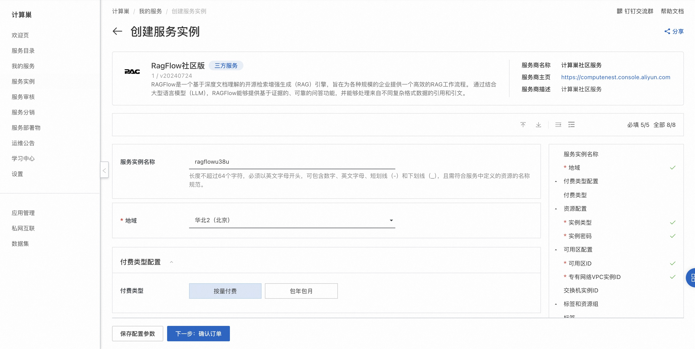
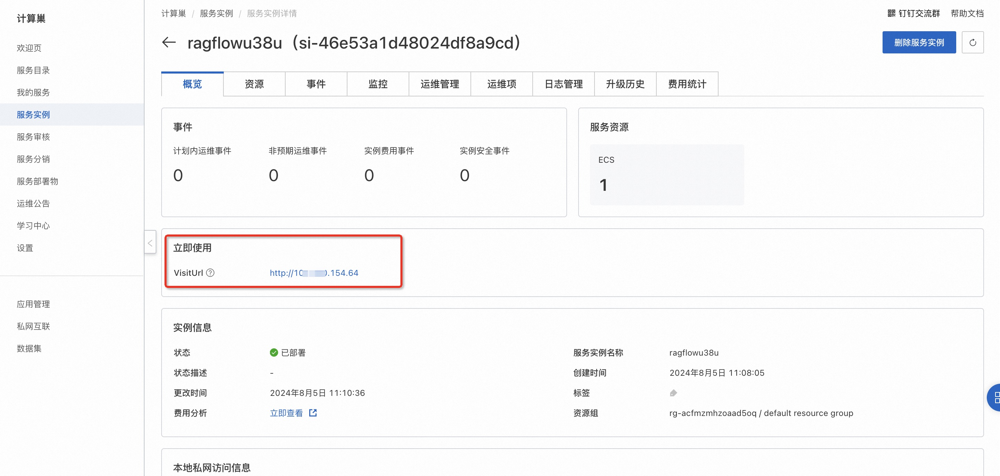
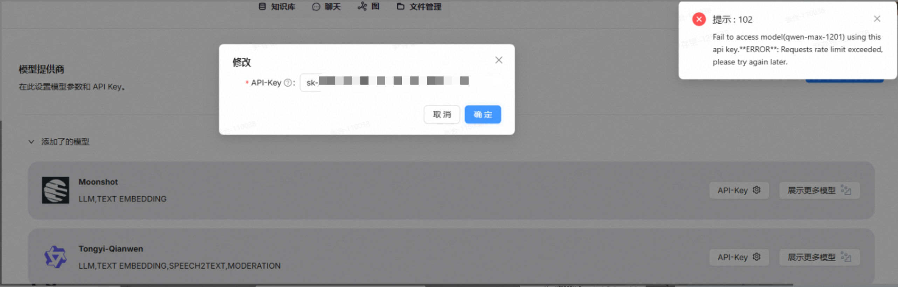
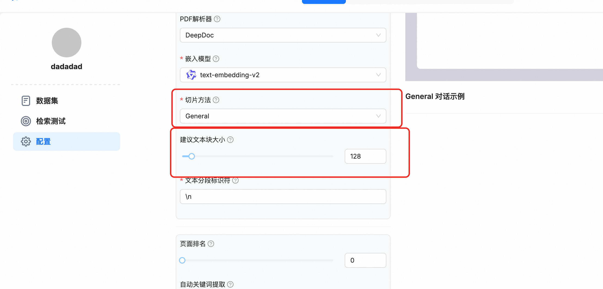

RAGFlow 社区版快速部署
概述
RAGFlow是一个基于深度文档理解的开源RAG（检索增强生成）引擎。当与LLM集成时，它能够提供真实的问答功能，并得到各种复杂格式数据的充分引用的支持。 详情请查看RAGFlow官网。
计费说明
RAGFlow 社区版上的费用主要涉及：
- 所选vCPU与内存规格
- 系统盘类型及容量
- 公网带宽
RAM账号所需权限
部署RAGFlow 社区版，需要对部分阿里云资源进行访问和创建操作。因此您的账号需要包含如下资源的权限。 说明：当您的账号是RAM账号时，才需要添加此权限。
| 权限策略名称 | 备注 |
|---|---|
| AliyunECSFullAccess | 管理云服务器服务（ECS）的权限 |
| AliyunVPCFullAccess | 管理专有网络（VPC）的权限 |
| AliyunROSFullAccess | 管理资源编排服务（ROS）的权限 |
| AliyunComputeNestUserFullAccess | 管理计算巢服务（ComputeNest）的用户侧权限 |
部署流程
-
访问RAGFlow 社区版服务部署链接，按提示填写部署参数： 
-
参数填写完成后可以看到对应询价明细，确认参数后点击下一步：确认订单。确认订单完成后同意服务协议并点击立即创建进入部署阶段。
- 等待部署完成后进入服务实例管理, 在控制台找到RAGFlow服务访问链接。 
- 单击链接访问服务。
API调用方式示例
🐍 点击展开完整 Python API 调用代码
#!/bin/bash
API_SERVER="http://xxx"
API_KEY="ragflow-ZjY2RlNG0Mm"
AGENT_ID="79663ba692cd11f0bd180242ac120006"
echo "=== RAGFlow Agent 流式对话测试 ==="
# 函数：发送流式消息
send_stream_message() {
local question="$1"
echo "问题: $question"
echo "回答:"
curl --request POST \
--url "${API_SERVER}/api/v1/agents/${AGENT_ID}/completions" \
--header 'Content-Type: application/json' \
--header "Authorization: Bearer ${API_KEY}" \
--data "{
\"question\": \"${question}\",
\"stream\": true
}"
echo -e "\n"
echo "----------------------------------------"
}
# 函数：发送非流式消息
send_message() {
local question="$1"
echo "问题: $question"
echo "回答:"
curl --request POST \
--url "${API_SERVER}/api/v1/agents/${AGENT_ID}/completions" \
--header 'Content-Type: application/json' \
--header "Authorization: Bearer ${API_KEY}" \
--data "{
\"question\": \"${question}\",
\"stream\": false
}"
echo -e "\n"
echo "----------------------------------------"
}
# 1. 基础对话测试
echo "1. 基础对话测试（流式）"
send_stream_message "你好，请介绍一下自己"
sleep 2
# 2. 功能询问
echo -e "\n2. 功能询问（流式）"
send_stream_message "你能做什么？"
sleep 2
# 3. 知识问答
echo -e "\n3. 知识问答（流式）"
send_stream_message "请介绍一下RAGFlow的主要特点"
sleep 2
# 4. 技术问题
echo -e "\n4. 技术问题（流式）"
send_stream_message "如何使用RAGFlow构建知识库？"
sleep 2
# 5. 非流式测试
echo -e "\n5. 非流式测试"
send_message "总结一下我们刚才的对话"
echo -e "\n=== 测试完成 ==="
常见问题
-
使用通义千问API 报错API调用频率限制：  解决方案：添加Ragflow官方交流群协商修改使用限制。
-
解析过程中崩溃 大多数情况是由于内存爆炸导致。 可以采取升配ECS内存或者切片使用General模式，并且调低chunk_size
© 2009-2022 Aliyun.com 版权所有